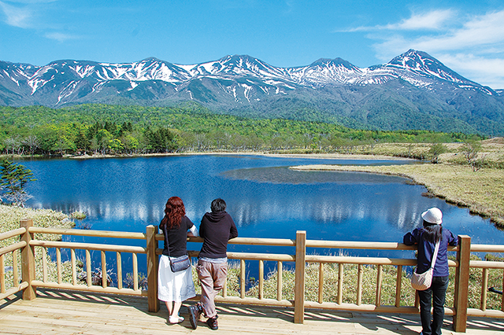
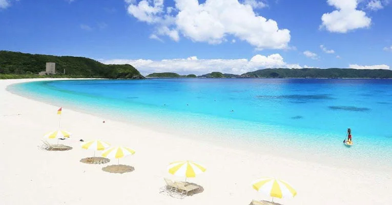

Belezas Naturais
Monte Fuji

O Monte Fuji é a montanha mais alta do Japão, com 3.776 metros de altura. É um vulcão ativo e um dos cartões postais mais famosos do país.
Parque Nacional de Shiretoko
Localizado em Hokkaido, o Parque Nacional de Shiretoko é uma área de beleza natural inigualável e um Patrimônio Mundial da UNESCO.
Praia de Okinawa
As ilhas de Okinawa oferecem algumas das praias mais bonitas do Japão, com águas cristalinas e recifes de coral que atraem mergulhadores de todo o mundo.